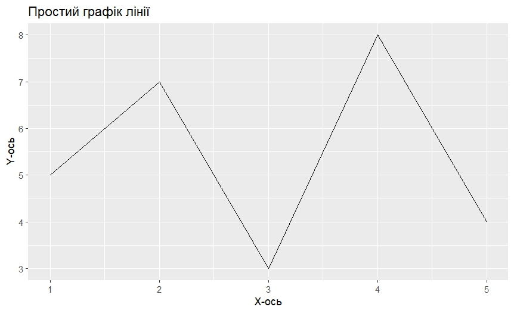

Імпортування бібліотек
Імпортування бібліотек дозволяють розширити стандартні методи, щоб не писати все з нуля
Встановлення бібліотеки
install.packages("ggplot2")
В даному випадку ми імпортуємо бібліотеку ggplot2, яка слугує для візуалізації даних.
Якщо бібліотека у вас встановлена, то кожного разу буде попередження про перевстановлення бібліотеки.
Отже, ми лише встановили бібліотеку, але не використовуємо її.
library(ggplot2)
В цьому випадку ми сказали прямо, що використовуємо бібліотеку. Що важливе - ми записуємо назву без лапок. Цей метод є найбільш поширеним і зазвичай використовується для імпортування бібліотек. Функція library() завантажує вказану бібліотеку і зробить всі її функції доступними в поточному сеансі.
Інший спосіб імпортування:
require(ggplot2)
Функція require також завантажує вказану бібліотеку, але повертає TRUE, якщо бібліотека була успішно завантажена, і FALSE, якщо ні. Це може бути корисно для перевірки наявності бібліотеки перед її завантаженням.
Також, ми можемо імпортувати бібліотеку в будь-якому місці, наприклад:
my_function <- function() {
library(ggplot2)
# код функції
}
Створимо приклад, який створює графік з використанням бібліотеки ggplot2:
library(ggplot2)
# Створення даних
data <- data.frame(
x = c(1, 2, 3, 4, 5),
y = c(5, 7, 3, 8, 4)
)
# Створення графіка
ggplot(data, aes(x = x, y = y)) +
geom_line() +
ggtitle("Простий графік лінії") +
xlab("X-ось") +
ylab("Y-ось")
Запустивши код, отримаємо такий графік:
